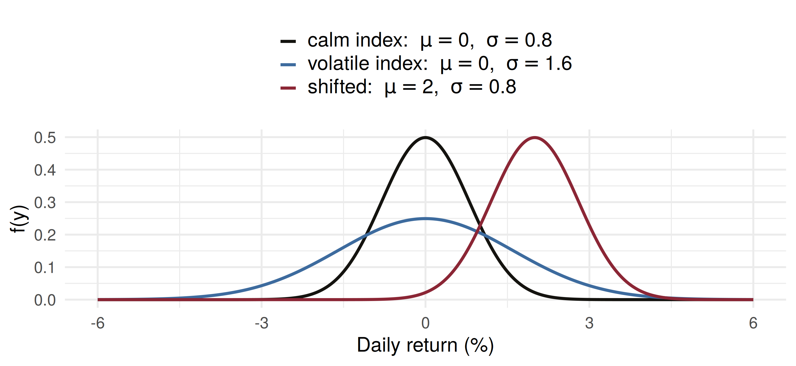
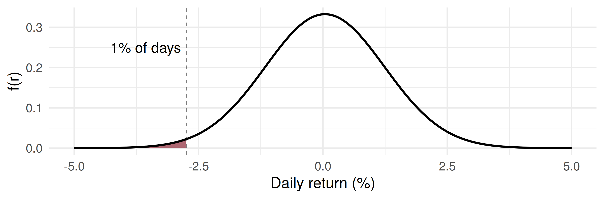
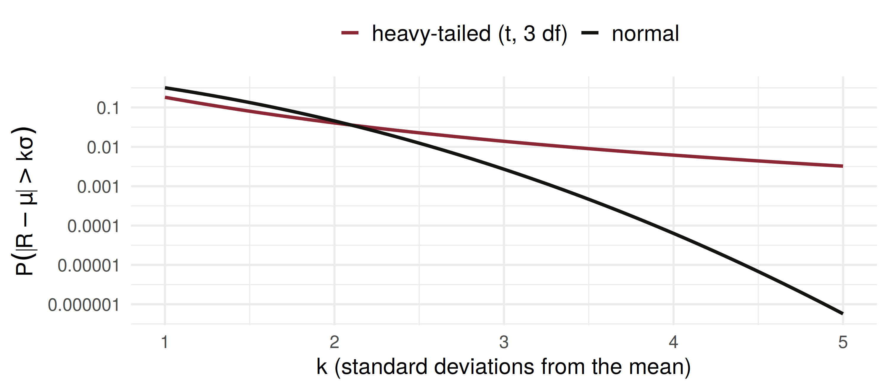

a b c
0.02275 0.95450 0.45818 Mathematical Statistics
The Normal Probability Distribution
Samir Orujov, PhD
ADA University, School of Business
Information Communication Technologies Agency, Statistics Unit
2026-09-24
🎯 Learning Objectives
By the end of this lecture, you will be able to:
State Definition 4.8 and read \(\mu\) and \(\sigma\) off a normal density (Theorem 4.7)
Standardise any normal variable with \(Z = (Y - \mu)/\sigma\) and find probabilities from Table 4 and from
pnormInvert the calculation with
qnormto find a quantile: a cut-off, a fill setting, a budgetCompute a one-day Value-at-Risk at the normal quantile
Explain why real daily returns have heavier tails than the normal model allows
🗺️ Where We Are
Wackerly §4.5
Saturday: expected values for continuous random variables, \(E(Y) = \int y f(y)\,dy\), and the uniform distribution, where every probability is a length divided by a length.
The uniform made the integral easy. Today’s density is the opposite: the one the whole course leans on, and the one whose integral has no closed form at all.
So the skill today is not integration. It is standardising, and then reading a table or asking R.
❓ The Question This Lecture Answers
A risk desk in Baku
A bank’s trading book holds 2,000,000 AZN in a broad equity index. The daily return has mean \(0.04\%\) and standard deviation \(1.2\%\).
What loss will the book not exceed on 99% of trading days?
That number is the one-day 99% Value-at-Risk. To compute it we need a model for the return, a way to find a tail area under that model, and a way to run the calculation backwards from an area to a cut-off.
📐 Definition 4.8
Definition 4.8
A random variable \(Y\) is said to have a normal probability distribution if and only if, for \(\sigma > 0\) and \(-\infty < \mu < \infty\), the density function of \(Y\) is \[f(y) = \frac{1}{\sigma\sqrt{2\pi}}\, e^{-(y-\mu)^2/(2\sigma^2)}, \qquad -\infty < y < \infty.\]
Two parameters, \(\mu\) and \(\sigma\). The exponent is a squared distance from \(\mu\), measured in units of \(\sigma\): the further from \(\mu\), the faster the density falls away.
📐 Theorem 4.7
Theorem 4.7
If \(Y\) is normally distributed with parameters \(\mu\) and \(\sigma\), then \[E(Y) = \mu \qquad \text{and} \qquad V(Y) = \sigma^2.\]
The proof waits for §4.9, via the moment-generating function.
\(\mu\) locates the centre; the density is symmetric about it, so the median is \(\mu\) too
\(\sigma\) measures the spread: the peak is \(1/(\sigma\sqrt{2\pi})\) at \(y = \mu\), and the curve bends at \(\mu \pm \sigma\) (Exercises 4.78, 4.79)
📊 \(\mu\) Locates, \(\sigma\) Spreads

Doubling \(\sigma\) halves the peak and doubles the width. Area stays 1.
🧮 No Closed Form: Table 4 and R
\[P(a \le Y \le b) = \int_a^b \frac{1}{\sigma\sqrt{2\pi}}\, e^{-(y-\mu)^2/(2\sigma^2)}\,dy\] has no closed-form antiderivative. It is evaluated numerically, and there are two ways to get the answer:
Table 4, Appendix 3 gives \(A(z) = P(Z > z)\), the area to the right of \(z\), for the standard normal only
R:
pnorm(y0, mu, sigma)gives \(P(Y \le y_0)\);qnorm(p, mu, sigma)gives the \(p\)th quantile \(\phi_p\) with \(P(Y \le \phi_p) = p\)
The only advantage of software is more decimal places. Watch the direction: the table is a right tail, pnorm is a left tail.
🔄 One Table for Every Normal
There are infinitely many normal distributions, but one table is enough, because \[Z = \frac{Y - \mu}{\sigma}\] is a standard normal random variable: mean 0, standard deviation 1 (proved in Chapter 6).
\(z\) is the distance from the mean in standard deviations. So \[P(Y > y_0) = P\!\left(Z > \frac{y_0 - \mu}{\sigma}\right) = A\!\left(\frac{y_0 - \mu}{\sigma}\right).\]
A return of \(-2.36\%\) on a day with \(\mu = 0.04\%\), \(\sigma = 1.2\%\) is \(z = -2\): two standard deviations below the mean, whatever the units.
📊 Example 4.8: Table vs R
\(Z\) standard normal, Table 4:
(a) \(P(Z > 2) = A(2.0) = .0228\)
(b) \(P(-2 \le Z \le 2) = 1 - 2(.0228) = .9544\)
(c) \(P(0 \le Z \le 1.73) = .5 - A(1.73) = .5 - .0418 = .4582\)
Part (b) differs in the fourth decimal: \(.9544\) from the rounded table, \(.95450\) from R. Symmetry did the work in (b) and (c): the table only covers one side.
🏭 Worked Example: Filling Flour Sacks
A flour mill in Ganja packs 50 kg sacks. The fill weight is normal with \(\mu = 50.2\) kg and \(\sigma = 0.4\) kg. What fraction of sacks is underweight?
\[z = \frac{50 - 50.2}{0.4} = -0.5, \qquad P(Y < 50) = P(Z < -0.5) = A(0.5) = .3085\] Almost a third of the sacks break the label. Symmetry turned a left tail at \(-0.5\) into the table’s right tail at \(+0.5\).
Within \(49.5\) to \(51\) kg: \(z_1 = -1.75\), \(z_2 = 2.0\), so \[P = 1 - A(1.75) - A(2.0) = 1 - .0401 - .0228 = .9371\]
🎯 Backwards: Setting the Mean
The regulator allows 1% underweight. Keep \(\sigma = 0.4\); where must the machine’s mean be set?
We need \(P(Y < 50) = .01\), so \(50\) must sit \(z_{.01}\) standard deviations below \(\mu\). Table 4: \(A(2.33) = .0099 \approx .01\). \[\mu = 50 + 2.33(0.4) = 50.932 \text{ kg}\]
The price of the rule: about 0.73 kg of extra flour per sack over today’s setting. The alternative is a better machine: a smaller \(\sigma\) needs a smaller safety margin.
💳 Standardising Credit Scores
A Baku bank scores applicants on a scale that is normal with \(\mu = 640\), \(\sigma = 80\), and approves at 700 or above.
\[z = \frac{700 - 640}{80} = 0.75, \qquad P(Y \ge 700) = A(0.75) = .2266\]
It buys a second bureau’s scores, normal with \(\mu = 520\), \(\sigma = 60\). The comparable cut-off is the one with the same \(z\): \[520 + 0.75(60) = 565\]
Between 600 and 720 on the first scale: \(1 - A(0.5) - A(1.0) = 1 - .3085 - .1587 = .5328\).
📉 Value-at-Risk at the Normal Quantile
Back to the trading book: \(R \sim\) normal, \(\mu = 0.04\%\), \(\sigma = 1.2\%\), position \(2{,}000{,}000\) AZN.
The 1% quantile of the return is \(\mu - z_{.01}\,\sigma\). With the table’s \(2.33\): \[\phi_{.01} = 0.04 - 2.33(1.2) = -2.756\%\]
\[\text{VaR}_{99\%} = 0.02756 \times 2{,}000{,}000 \approx 55{,}120 \text{ AZN}\] On 99 days in 100 the book loses less than this. On the other one day it loses more, and the model says nothing about how much more.
💻 VaR in R
Code
quantile_pct VaR_AZN
1 -2.7516 55032
qnorm gives \(55{,}032\) AZN; the table’s rounded \(2.33\) overstates by about 90 AZN.
⚠️ Why Real Tails Are Heavier
Under the normal model a move beyond \(4\sigma\) has probability \(2A(4) \approx 0.000063\): once in about 63 years of 250 trading days. Equity indices produce such days far more often.
A heavier-tailed model with the same \(\sigma\) (Student’s \(t\) with 3 df, rescaled; met properly in Chapter 7), simulated for ten years:
Code
beyond simulated_days normal_expected
1 3 sigma 29 6.75
2 4 sigma 16 0.16📈 The Tail, on a Log Scale

Same mean, same \(\sigma\); the curves cross near \(2\sigma\). At \(4\sigma\) the heavy tail is about 100 times as likely, so normal VaR understates extreme losses.
🧠 Think-Pair-Share
A mobile operator models a subscriber’s monthly data use as normal with \(\mu = 12\) GB and \(\sigma = 4\) GB.
Four minutes, in pairs:
What fraction of subscribers use more than 20 GB?
A “heavy user” tariff targets the top 5%. Where is its threshold?
What does the model say about \(P(Y < 0)\), and what does that tell you about the model?
✅ Think-Pair-Share: Solution
\(z = (20 - 12)/4 = 2\), so \(P(Y > 20) = A(2.0) = .0228\): about 2.3% of subscribers.
The top 5% starts at \(z_{.05} = 1.645\): \(\;12 + 1.645(4) = 18.58\) GB. In R,
qnorm(0.95, 12, 4).
- \(P(Y < 0) = P(Z < -3) = A(3.0) = .00135\). Small, but impossible usage has positive probability. Data use is bounded below by zero and skewed to the right; the normal is a working approximation near the centre, not a law of nature. Check the support before you trust the tails.
📝 Quiz #1: Reading the Table
\(Z\) is standard normal. What is \(P(Z > 1.5)\)?
- \(0.0668\)
- \(0.9332\)
- \(0.4332\)
- \(0.1336\)
📝 Quiz #2: Setting a Budget
A power plant’s weekly fuel bill is normal with \(\mu = 4000\) AZN and \(\sigma = 250\) AZN. What budget is exceeded in only 10% of weeks?
- About \(4320\) AZN
- About \(4411\) AZN
- About \(4490\) AZN
- About \(4250\) AZN
📝 Quiz #3: What the Normal Misses
Real daily index returns show many more moves beyond \(4\sigma\) than the normal model predicts. What does this do to a 99.9% normal VaR?
- It understates the loss the book can actually suffer
- It overstates the loss, so the bank holds too much capital
- Nothing: VaR depends only on \(\mu\) and \(\sigma\), which are unchanged
- It makes VaR undefined
📋 Key Formulas
| Statement | |
|---|---|
| Definition 4.8 | \(f(y) = \frac{1}{\sigma\sqrt{2\pi}}\, e^{-(y-\mu)^2/(2\sigma^2)}\) |
| Theorem 4.7 | \(E(Y) = \mu, \; V(Y) = \sigma^2\) |
| standardising | \(Z = (Y - \mu)/\sigma\) |
| Table 4 | \(A(z) = P(Z > z)\) |
| R, forwards | pnorm(y0, mu, sigma) \(= P(Y \le y_0)\) |
| R, backwards | qnorm(p, mu, sigma) \(= \phi_p\) |
| quantiles | \(z_{.10} = 1.28,\ z_{.05} = 1.645,\ z_{.025} = 1.96,\ z_{.01} = 2.33\) |
📋 Summary
The normal density has two parameters: \(\mu\) is the mean and centre, \(\sigma\) the standard deviation and spread
Its integral has no closed form, so every probability goes through \(Z = (Y - \mu)/\sigma\) and then Table 4 or
pnormQuantiles run the same step backwards: \(y = \mu + z\sigma\), or
qnormA fill setting, an equivalent cut-off and a VaR are all one quantile
Real returns have heavier tails than the normal, so normal VaR is optimistic about the worst days
📚 Practice Problems
Wackerly, 7th edition, §4.5
Table practice: 4.58, 4.59; then 4.63 – 4.65 and 4.68 – 4.71
Quantiles and settings: 4.73 – 4.77; for the brave, 4.78 and 4.79
Do each one twice: once with Table 4, once with
pnorm/qnorm
Week 10, Problem Set 1 is open now and closes Sunday 22 November at 23:59 on WeBWorK, covering §4.5.
Next class: 14 November, the gamma, exponential and chi-square distributions (Wackerly §4.6).
🙏 Thank You
Dr. Samir Orujov
📧 sorujov@ada.edu.az
🏢 Building D, Room D325
🕓 Office hours: Wednesday, 16:00 – 18:00
Slides and readings: sorujov.net/teaching
❓ Questions
Why does one table suffice for infinitely many normal distributions?
If \(\sigma\) halves, what happens to the 99% VaR, and to the fill setting in the flour example?
Where else in finance would a normal model put positive probability on an impossible value?

Mathematical Statistics I - The Normal Distribution